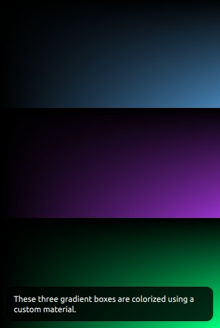

Simple Material Example
Shows how to define a scene graph material to fill a shape.

In this example, we will make use of the QSGSimpleMaterialShader class to fill a shape in the scene graph. This is a convenience class intended to avoid a lot of the boilerplate code required when creating materials with the QSGMaterial, QSGMaterialShader and QSGMaterialType classes directly.
A simple material consists of two parts, the material state and the material shader. The material shader has one instance per scene graph and contains the actual OpenGL shader program and information about which attributes and uniforms it uses. The material state is what we assign to each individual node, in this case to give them different colors.
The first thing we do when creating custom materials with the simplified scheme is to create a state class. In this case the state class contains only one member, a QColor. It also defines a compare function which the scene graph can use to reorder the node rendering.
Next we define the material shader, by subclassing a template instantiation of QSGSimpleMaterialShader with our State.
Then we use the macro QSG_DECLARE_SIMPLE_COMPARABLE_SHADER() which will generate some boilerplate code for us. Since our State class has a compare function, we declare that the states can be compared. It would have been possible to remove the State::compare() function and instead declare the shader with QSG_DECLARE_SIMPLE_SHADER(), but this could then reduce performance in certain usecases.
The state struct is used as a template parameter to automatically generate a QSGMaterialType for us, so it is crucial that the pair of shader and state are made up of unique classes. Using the same State class in multiple shaders will will lead to undefined behavior.
Next comes the declaration of the shader source code, where we define a vertex and fragment shader. The simple material assumes the presence of qt_Matrix in the vertex shader and qt_Opacity in the fragment shader.
We reimplement the attributes function to return the name of the aVertex and aTexCoord attribute names. These attributes will be mapped to attribute indices 0 and 1 in the node's geometry.
Uniforms can be accessed either by name or by index, where index is faster than name, so we reimplement the resolveUniforms() function to find the index of the color uniform. We do not have to worry about resolving qt_Opacity or qt_Matrix as these are handled by the baseclass.
The updateState() function is called once for every unique state and we use it to update the shader program with the current color. The previous state is passed in as a second parameter so that the user can update only that which has changed. In our usecase, where all the colors are different, the updateState will be called once for every node.
The ColorNode class is supposed to draw something, so it needs to be a subclass of QSGGeometryNode.
Since our shader expects both a position and a texture coordinate, we use the default attribute set QSGGeometry::defaultAttributes_TexturedPoint2D() and define that the geometry consists of a total of four vertices. To avoid the allocation, we make the QSGGeometry a member of the QSGGeometryNode.
When used the macro QSG_DECLARE_SIMPLE_COMPARABLE_SHADER() above, it defined the createMaterial() function which we use to instantiate materials for our State struct.
As we will be making use of opacity in our custom material, we need to set the QSGMaterial::Blending flag. The scene graph may use this flag to either disable or enable GL_BLEND when drawing the node or to reorder the drawing of the node.
Finally, we tell the node to take ownership of the material, so we do not have to explicitly memorymanage it.
Since the Item is providing its own graphics to the scene graph, we set the flag QQuickItem::ItemHasContents.
Whenever the Item has changed graphically, the QQuickItem::updatePaintNode() function is called.
Note: The scene graph may be rendered in a different thread than the GUI thread and QQuickItem::updatePaintNode() is one of the few places where it is safe to access properties of the QML object. Any interaction with the scene graph from a custom QQuickItem should be contained to this function. The function is called on the rendering thread while the GUI thread is blocked.
The first time this function is called for an Item instance, the node will be 0 and we create a new one. For every consecutive call, the node will be what we returned previously. There are scenarios where the scene graph will be removed and rebuilt from scratch however, so one should always check the node and recreate it if required.
Once we have a ColorNode, we update its geometry and material state. Finally, we notify the scene graph that the node has undergone changes to its geometry and material.
The main() function of the application adds the custom QML type using qmlRegisterType() and opens up a QQuickView with our QML file.
In the QML file, we import our custom type so we can instantiate it.
Then we create a column of three instances of our custom item, each with a different color.
And finally we overlay a short descriptive text.
Files: